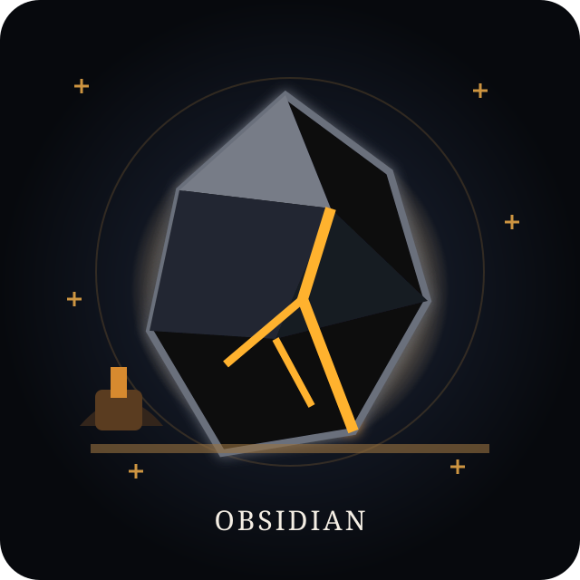

✦sealed wonder
EARTH_001 · UNKNOWN
One small object. One surprisingly big story.
Small objects. Big perspectives.

One small object. One surprisingly big story.
The first eight real wonders.
0 collected
Collect something beautiful, learn one thing worth remembering, then share the curiosity.
Science and belief stay separate. Cultural meanings are presented as history, folklore or modern symbolism — never as scientific evidence.
This is an open-source prototype. Fork it, study it, remix the mechanics, or help us make the museum more delightful.
Discover → Learn → Keep → Share